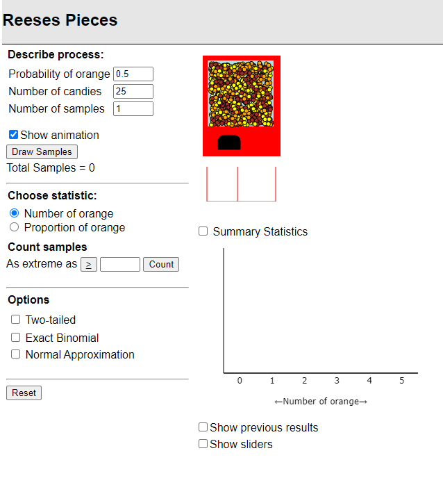

STAT 218 - Week 4, Lecture 1
January 29th, 2024
Last week we…
| deviation from the mean | sample standard deviation | sample variance | palmer penguins |
| quartiles | interquartile range (IQR) | outlier | range |
| Normal curve | probability | Normality | love bombing |
| discrete variable | healthy boundaries | density curve | chance |
| robustness | saber-toothed tigers | YAML (what?) | .csv |
| exponential distribution | bimodal | right-skewed | left-skewed |
| standard normal distribution | standardization formula | percentile | within \(\pm\) 1 SD of the mean |
| Normal Quantile Plot | The Shapiro-Wilk test | histogram | The 68/95/99.7 rule |
In data analysis, our primary goal as life scientists is to distinguish actual biological features from those that might be the result of random chance.
Generally we obtain a single random sample, which comes from a very large population.
Revisiting the Fish Length Example
Length of Fish: Here is what we know about the shape and population parameters:
Scan this QR code and share your educated guess for different sampling scenarios.
In the length of fish example, we predicted what would happen in two different scenarios.
Let’s use our applet to see another example regarding proportions.

We will draw multiple samples of three different sizes and simulate data to observe how it affects the variability of the sample proportions for different sample sizes.
Your Turn:
My Turn:
1. In real life, it is impossible to take infinitely many random samples.
Life scientists often work with one single sample.
2. Sample statistics vary from sample to sample.
We see different proportions in each trial.
3. The mean of the all possible sample proportions converges to the population proportion.
We increased the number of samples to 1000 and we saw that the proportion distribution of the all sample proportions converges to the population proportion.
4. Sample size is important.
We tested different sample sizes and we observed the as we increase sample size, the standard deviation tends to decrease.
We can apply these take away messages to the fish length variable.
Sampling variability: The variability among random samples from the same population.
Sampling distribution: A probability distribution that describes sampling variability in \(\bar Y\).
Let’s elaborate sampling distribution of \(\bar Y\).
See Example 5.2.2 in our textbook.
{kind=link}